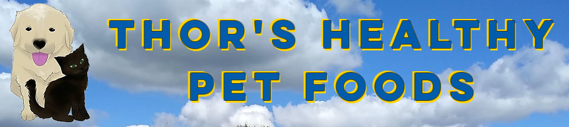

A Special Thank You
We are extremely grateful for all the people who are supporting and helping to build up Maternal Village Hamilton and our programming. We are thankful for the food donations, the event turnouts, and even all the Facebook shares. We would like to shine a light on this list of individuals and/or businesses that have gone that little extra for us.
Thor’s Healthy Pet Foods have donated a lot of dog and cat food to put towards our Food Bank. They agree with us that even fur children should be taken care of in times of need.

Some of the businesses in the area have donated to Maternal Village Hamilton to help with our fundraising events. Thank you for your contribution to grow our community